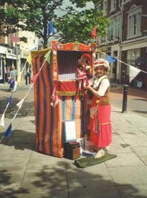
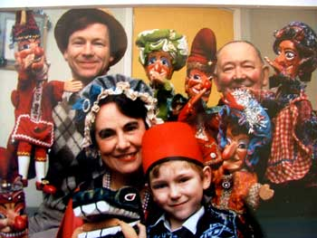
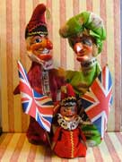

Family Pictures continued!
Here’s “Rosa” with her familiar striped Booth and Mr. Punch of course, in Wellington Town centre waiting for her next audience to gather…!

It is true to say that over the past 346 years, since Punch’s Show was first witnessed and recorded by Samuel Pepy’s in 1662, that most “Professors” have been men …!
However "Rosa" is the exception and is perhaps one of only a small handful of Lady performers to present the “Punch and Judy” Show in the UK…! So there we have it the Peasley Family Punch history … !
And what of the future…? Well I have two sons both of which may feel the urge one day, just like I did to carry on the tradition …?

This was a picture taken some years ago now and shows my son Adam with the crocodile along with my father "Ericko" and mother "Rosa", and of course myself… A young budding puppeteer maybe...?
And what about my other son.. ! Christopher…? Well here he is trying on Mr. Punch and Judy for size…!
Punch has in many cases been passed down from father to son…! (and in some cases father to daughter…! ) There are many well known examples of where this has happened, with each transition the show has evolvedand the tradition has continued to be kept alive and fresh for new generations of children…!
I am confident that Mr Punch and his friends will continue to live on and provide quality entertainment for many years to come…!

What a family!